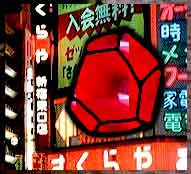

Представь: открываешь ты книгу (хотя ты её уже открыла, ну неважно) и вдруг видишь — внутри лежит долька лука. (Типа я договорился чтоб издательство положило.)
И ты типа «Ой, тут лук в книге!» (Даже если ты не любишь лук, все равно оценишь прикол — это ж получается контрабанда овощей под видом книг по программированию!)
И ты типа «Погоди. Это ж вроде книга про Руби, компьютерный язык из Японии. Я конечно понимаю — контрабанда овощей под видом книг по программированию, но зачем мне лук? Что мне с ним делать–то?»
Стоп. Не волнуйся. С луком ничего делать не надо. Положи его рядышком. Это он с тобой что–то сделает.
Ладно, не буду тебе голову морочить, идея такая: ты должна плакать. Рыдать. Заливаться слезами. Ведь это душевный учебник по Руби! Потому что программы на Руби получаются такие красивые, что аж плакать хочется! Плакать и засыпать, обнимая эту книгу, полную поучительных преданий и жестоких истин. Просыпаться и носить её, не разжимая объятий, целый день. А потом сделать обложку из кожи, обшить её бисером, и совсем никогда невыпускать эту книгу из рук, а только носить и гладить её, гладить…
Ну, давай всхлипни разик. Или хотя–бы шмыгни. Нет? Ну тогда одна надежда на лук.
Начнем с примера душевности. Примерь–ка такую историю:
Как–то раз, гулял я по дороге, сплошь покрытой дилерками автомобилей. Утром я должен был жениться, но свадьба не состоялась. И вот иду я, иду, и вижу бездомную собаку: черную, лохматую, с зелено–красными мокрыми глазами. И я подумал, вот и я такой же брошенный. Снял с какой–то машины пару воздушных шариков и привязал к собаке. И решил взять её себе. Даже кличку сразу придумал — «Жесть».
Первым делом мы с Жестью решили похавать, а потом пойти ко мне, и целый вечер качаться в креслах–качалках и слушать «Gorky’s Zygotic Mynci». А, ну да, надо будет зайти в магазин б–у–шной мебели и купить для Жести собственное кресло–качалку.
Но пока я задумавшись переходил перекресток, глупая собака побежала в другую сторону и скрылась из виду. Ведь она ещё не привыкла, что я её хозяин. Теперь получалось, она была дважды бездомная. Пришлось попуститься с покупкой второго кресла–качалки. У меня была собака, целых пять минут.
Не собака, а перебежчик дурацкий. Я долго сидел на скамейке и бросал шишками в памятник трём овцам. А потом долго плакал… Слёзы как–то сами лились… Ну как, достаточно душевная история?
Интересно, куда она пошла с шариками на спине… Наверно выглядела совершенно безумно, просто ходячий утренник.
Довольно скоро я и сам стал предателем. Распечатал пару страниц про Руби с интернета. Просмотрел в метро по дороге домой. Минут пять полистал и сдался — «фигня это всё».
Сидел, втыкал в окно, смотрел как мир — гигантский миксер — сплавляет граффити с железом, и думал: «Всё равно такой язык не выживет в таком мире. Он просто слишком добрый. И у него нет ни ног чтобы убежать, ни рук чтобы за себя постоять.»
Правда, был я, но чем я мог помочь? Маленький чувак, в хлипеньком вагончике (у меня тогда ещё даже один молочный зуб оставался), один из миллиардов людей на голубом летающем шарике. Откуда кто знает, может вечером я подавлюсь мобилкой и сдохну! В газетах напишут: «_why умер — Руби продолжает жить». А на могиле будет написано:
Угадайте, что у чувака в горле? Ну конечно же это «Нокия»!
Реальная везуха. Наконец–то нормально высплюсь под землёй, хотя конечно стандартный рингтон задолбает звонить в животе.
Ты спросишь — почему я таки решил взяться за Руби? Мы подошли друг–другу!
Вот представь — в детском саду на уроках рисования ты сидела с одним очень вредным мальчиком. Он тебя всячески мучал, тыкал кисточками в лицо и всё такое, а потом ты выросла, поступила в институт, и вдруг встретила очень похожего человека. И ты, как–бы по инерции, чувствуешь к нему неприязнь: тебя тошнит от его причёски, ты бросаешь трубку на самом интересном месте его рассказа, прыгаешь на тренажере «Кузнечик» у него под носом и т.д.
Но вот проходит пол–года, и вы сидите у фонтана и прекрасно общаетесь, а его лицо уже не напоминает о детских кошмарах. Оказывается, ты встретила хорошего двойника. Вы подошли друг–другу!
Поэтому я не стану прожуживать тебе все уши расхваливая Руби на все лады. Хотя мог бы найти в словарике пару точных эпитетов и особо замысловатых аббревиатур… Это конечно понравилось бы моему начальству, а особенно начальству начальства… Но вместо этого я пущу дело на самотёк. Всё должно быть легко и свободно, как–бы само по себе.
Хотя, по идее, читателя положено замотивировать… Прийдется мне напрячься и объяснить моей птичечке, зачем ей учить Руби:
### Зарядка для мозгов.
Витамин «Рэ». Всасывается прямо в мозг и нереально улучшает способность выражать мысли. Это как быть писателем, только вместо читателя — комп…
Ты только представь себе: креативность, логика, интелегентный взгляд. Язык как инструмент общения с миром. Кстати, я реально заметил, что многие продвинутые Рубиисты отличаются ясным, но самокритичным, мышлением (т.е. они не тупят, но при этом не думают что их правда единственно верная).
### Чувак на острове.
Руби произошел из Японии, что вообщем–то несколько странновато, ведь японцы славятся чем угодно, только не программированием. И вообще, большинство языков программирования придуманы в западных странах. Короче, никто не ожидал, что японцы вдруг возьмут и придумают свой язык.
А тут здрасте, они взяли и придумали Руби, точнее, не они, а он, Юкихиро Мацумото. А придумал он его 24го Февраля 1993го года. Ну конечно не за один день, потом он его много лет улучшал, улучшал, и постепенно вышел на международный уровень — великое достижение, дивный гений и всё такое. Короче говоря, давай поддержим культурное разнообразие. Так сказать, наклоним земную ось в сторону Азии.
### Шара.
Во–первых, Руби можно качать и юзать совершенно бесплатно. Во–вторых, каждый человек может взять исходники, изменить и залить назад. Даже эту книгу можно скачать на шару! Эдакая всемирная раздача слонов! Спрашивается — в чём же подвох?!
Может мы хотим втулить читателю пылесос, или дачный участок в ужасном месте, или фальшивый оригинал Ван–Гога? Типа раздаем подарки, а взамен просим посмотреть коротенькую презентацию, всего на 90 минут, с которой не выпустят пока не поставишь отпечаток пальца кровью на договоре?
Нифига. Реальная стопроцентная шара.
На этой оптимистичной ноте, перейдём к основной части книги. Доставай карандаш — будешь подчёркивать особо интересные места. Моих кроликов в шляпах и тузов в рукавах хватит до самой последней страницы.
Что самое главное в чтении книг? Ну конечно же это взаимопонимание. Да, да, именно взаимопонимание. На случай если ты никогда не читала книг ;) и не знаешь что такое взаимопонимание, я тебе объясню. Взаимопонимание, это когда мы с тобой помогаем друг другу. Без него у нас ничего не получится.
А закладывается оно как раз в этой главе, тут нам надо раззнакомиться, понять друг друга, и именно это чувство знакомства и взаимного понимания будет нашим бензином. Я буду показывать дорогу, а ты должна кивать или там мыгыкать — чтоб я знал что понятно объясняю.
Понарошку я Питер Пэн, а ты Вэнди. Я держу тебя за руку и говорю: «Давай, Вэнди! На второй звезде — направо, а там прямо до рассвета!» Правда, есть небольшая проблема… Я не очень–то умею общаться с людьми, тем более держаться за руки :((
На эту тему есть такая история. Помню на Официальной Церемонии Открытия Этой Книги (фуршет на стадионе и все такое), я заметил что на тосты вместо петиарового масла намазали обычное сливочное. Из–за этого шпроты прилипали, а огурцы соскальзывали. Я так страшно разозлился, что поджег все рекламные стенды, перевернул грузовики, и короче разнес к чертям весь этот балаган! При этом я хохотал жутким маниакальным смехом и вообще вел себя дико. Праздник был сорван…
Но так как я не умею общаться с людьми, то я никого не пригласил на церемонию, а значит позорится было не перед кем. О произошедшем я особо не распространялся, и никто ничего не узнал!
Из всего вышесказанного должно быть понятно: в этой книге «взаимопонимание» — это не настоящее Взаимопонимание. На настоящее Взаимопонимание я не способен. В этой книге «взаимопонимание» значит «мультяшные лисы». Это я к тому говорю, что в эту книгу заложены огромные кучи мультяшных лис…
И превращать их во Взаимопонимание прийдется тебе самой.